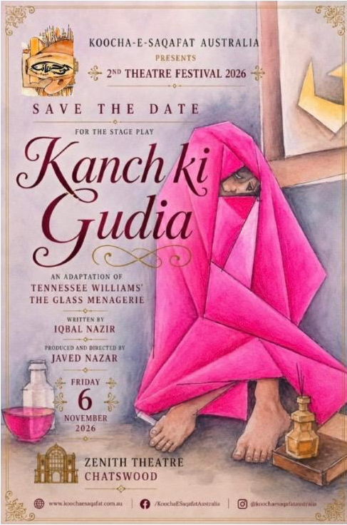
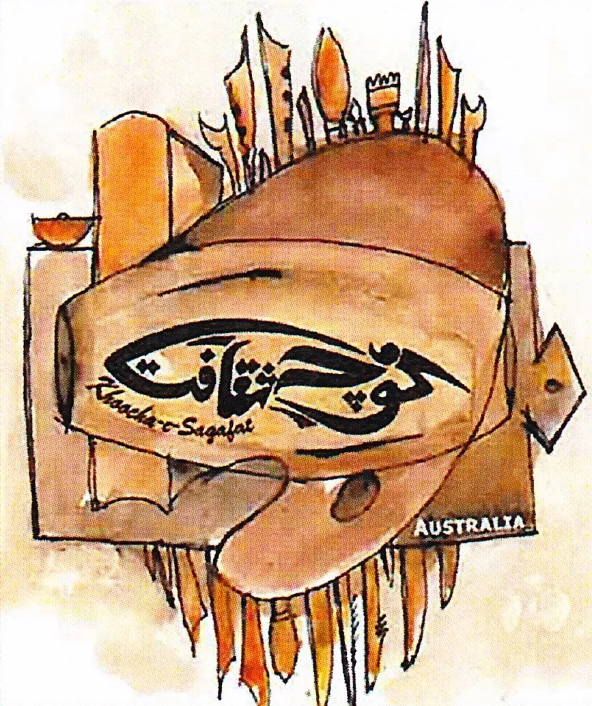
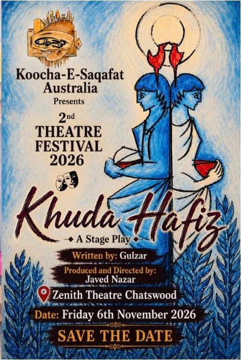

Kanch Ki Gudia
An adaptation of Tennessee Williams' The Glass Menagerie. Written by Iqbal Nazir. Produced and directed by Javed Nazar.

Koocha-e-Saqafat AustraliaHOUSE OF CULTURE AUSTRALIATwo outstanding Urdu stage productions bringing powerful stories, meaningful messages and the beauty of Urdu theatre to the Sydney stage.
Explore the Plays
An adaptation of Tennessee Williams' The Glass Menagerie. Written by Iqbal Nazir. Produced and directed by Javed Nazar.

A stage play written by Gulzar. Produced and directed by Javed Nazar.
Koocha-e-Saqafat Australia proudly presents cultural, theatrical and literary programmes that celebrate art, language and community in Australia.
Khuda Hafiz is a play by legendary writer Gulzar. Kanch Ki Gudia is an adaptation of Tennessee Williams' classic The Glass Menagerie, adapted by PTV award-winning writer Iqbal Nazir and directed by Javed Nazar. The story explores family relationships, social values, parental love and the emotional bonds between parents and children.
Friday
6 November 2026
Doors open 7:00 PM
Show 7:30 PM – 9:30 PM
Zenith Theatre and Convention Centre
McIntosh St & Railway St
Chatswood, NSW 2067
Each ticket comes with a complimentary dinner box to enjoy after the show.

A celebration of love, culture and community.

Cultural programme presented by Koocha-e-Saqafat Australia.

A memorable theatrical event.

Pakistani legendary artists sharing their memories with the audience.

Featuring Qavi Khan and Uzma Gilani.

Koocha-e-Saqafat Australia at the Rockdale Art Festival.

Celebrating Pakistani art and culture.

An evening of art, memories and conversation.

Koocha-e-Saqafat organised Naat Competition in Sydney.

A literary tribute presented by Koocha-e-Saqafat Australia.

Celebrating the art of calligraphy.